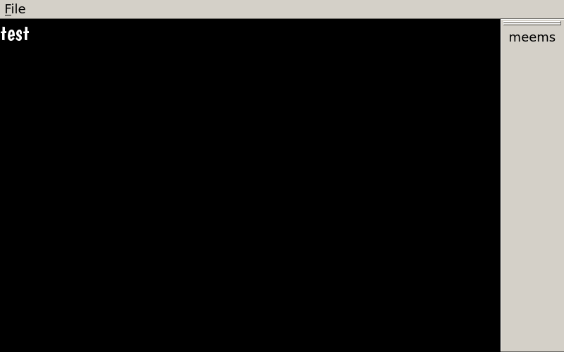
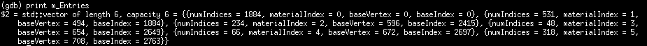
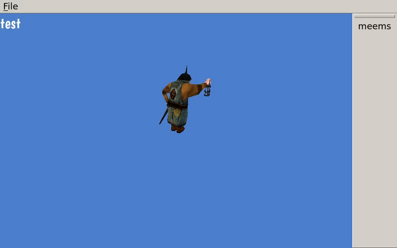
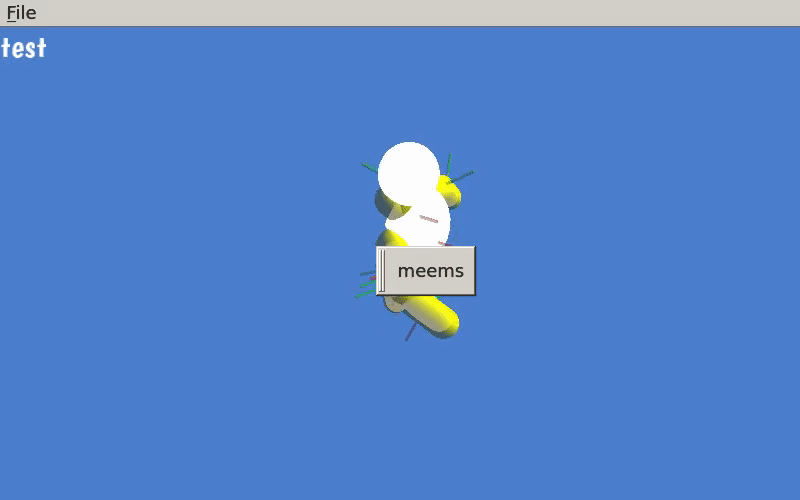

A program to create and attach hurtboxes to bones and create interpolated hitboxes per frame.
| Goal % |
Actual % |
Deadline |
Milestones |
Tasks |
Assigned To |
Completion Verification |
Expected Result |
Deliverables |
| 100% |
100% |
2017-10-10 |
Display window and UI |
Qt SFML Integration |
Matthew Tran |
Visual check |
A window appears with a menu bar, side bar, and view in the middle that has the words "test" in white against a black background |
 |
| Integration into CrispSynth |
Abraham Hamidi |
| 100% |
100% |
2017-10-15 |
Create box fileformat |
Hitbox specification |
Abraham Hamidi |
Visual check |
A text file that specifies the data format in which hitboxes and hurtboxes will be stored. |
Link to documentation |
| Hurtbox specification |
Matthew Tran |
| 100% |
100% |
2017-10-20 |
Load boned mesh |
Print values relating to mesh's geometry |
Abraham Hamidi |
Visual check |
A console log which shows the information about the first five meshes of the model, which should be
{numIndices = 1884, materialIndex = 0, baseVertex = 0, baseIndex = 0},
{numIndices = 531, materialIndex = 1, baseVertex = 494, baseIndex = 1884},
{numIndices = 234, materialIndex = 2, baseVertex = 596, baseIndex = 2415},
{numIndices = 48, materialIndex = 3, baseVertex = 654, baseIndex = 2649},
{numIndices = 66, materialIndex = 4, baseVertex = 672, baseIndex = 2697} |
 |
| Print values relating to mesh's hurtboxes and hitboxes |
Matthew Tran |
| 100% |
100% |
2017-10-30 |
Render mesh |
Write vertex and fragment shaders |
Abraham Hamidi |
Visual check |
A window with a menu bar, side bar, and view in the middle shows. In the view there is a man holding a lantern and looking around |
 |
| Write OpenGL code for rendering mesh to QtSFML Widget |
Matthew Tran |
| 100% |
100% |
2017-11-08 |
Render hurtboxes on top of mesh |
Update CrispSynth library to allow for attaching hurtboxes to meshes, allowing for realtime updating of member variables relating to their geometry |
Abraham Hamidi |
Visual check |
A window with a menu bar, side bar, and view in the middle shows. In the view there is a stick figure throwing kicks. Yellow spherocylinders will appear as well and be scaled with the figure's movements |
 |
| Render yellow hurtboxes according to their properties, also creating flag for toggling visibility |
Matthew Tran |
| 100% |
100% |
2017-11-15 |
Render hitboxes |
Update CrispSynth library to allow for attaching hitboxes to meshes, allowing for realtime updating of member variables relating to their geometry |
Abraham Hamidi |
Visual check |
A window with a menu bar, side bar, and view in the middle shows. In the view there is a stick figure throwing kicks. Red spheres will show in arbitrary locations throughout animation. Some will interpolate between frames, showing interpolation as a spherocylinder connecting the sphere of the previous and current frame |
|
| Render yellow hitboxes according to their properties, also creating flag for toggling visibility |
Matthew Tran |
| 100% |
100% |
2017-11-20
2017-12-3 |
Allow creation of hurtboxes |
Add a button to the side menu with an icon that resembles a hurtbox. Make it trigger a different side menu layout with textboxes for entering details for hurtbox |
Abraham Hamidi |
Visual check |
A window with a menu bar, side bar, and view in the middle shows. The side menu has a button with an icon. The button is clicked, adding a new yellow ellipsoid. |
|
| Make display reflect changes to hurtbox properties |
Matthew Tran |
| 100% |
100% |
2017-11-25
2017-12-7 |
Allow creation of hitboxes |
Add a button to the side menu with an icon that resembles a hitbox. Make it trigger a different side menu layout with textboxes for entering details for hitbox |
Abraham Hamidi |
Visual check |
A window with a menu bar, side bar, and view in the middle shows. The side menu has a button with an icon. The button is clicked, adding a new red ellipsoid |
Video of expected result |
| Make display reflect changes to hitbox properties |
Matthew Tran |